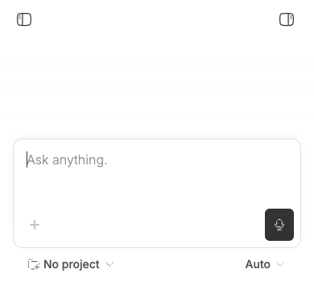
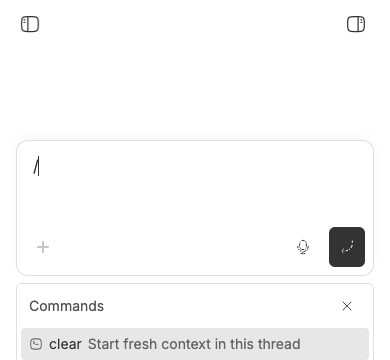

#3179 · Mobile command menu can render beyond the visual viewport
Verdict: PARTIALLY REPRODUCED · Root-cause confidence: medium
1. TL;DR
A real Chrome run with an Android user agent, touch input, coarse-pointer media query, and a 390×360 keyboard-constrained visual viewport showed exactly one fully visible slash-command suggestion in the new-thread composer. The menu began at 283px and extended to 477px, 117px past the visual viewport. A second clean checkout produced the same one-row result. The exact existing-thread case was not confirmed at that height because its menu uses the opposite placement and exposed several rows, and no physical Android software keyboard was available.
2. Claims vs findings
| Claim | Status | Evidence |
|---|---|---|
| A keyboard-constrained mobile Chrome surface can show only one slash-command result. | Verified | Both clean runs measured one fully visible command at 390×360; screenshots below show the clipped menu. |
| The failure occurs in an existing thread with a physical Android keyboard. | Unverified | The existing-thread follow-up composer exposed several rows at the same emulated height, and physical Android hardware was unavailable. |
| The command list is scrollable but lacks a mobile-specific placement. | Verified | The list has overflow-y-auto and a fixed 12rem maximum height, while its parent is placed absolutely above or below the composer. |
| The behavior is provider-independent. | Verified | The clipping happens after suggestions render in shared composer components; no provider turn is required. |
3. Environment
- Trusted bb commit:
6cdb4ba6125514b7660332cf311037bc09c82b0e - macOS arm64, Darwin 25.6.0; Node 22.22.3; pnpm 9.15.0
- Real headless Chrome driven through doobie with Android 14 / mobile Chrome 140 user-agent emulation, touch enabled, and
(pointer: coarse)matching - First isolated app/server/daemon ports: 11539 / 19539 / 27539; second: 14563 / 22563 / 30563
- Each run used a separate generated development data directory; no user bb data was read.
4. Minimal reproduction
- In a clean checkout at the trusted commit, run:
pnpm install --frozen-lockfile --prefer-offline pnpm exec turbo run build scripts/bb-dev-app current
- Replace
APP_PORTwith the app port printed by the launcher, then pass this script todoobie --headless:const page = await browser.getPage("issue-3179"); await page.setUserAgent("Mozilla/5.0 (Linux; Android 14; Pixel 7) AppleWebKit/537.36 (KHTML, like Gecko) Chrome/140.0.0.0 Mobile Safari/537.36"); await page.setViewport({ width: 390, height: 360, isMobile: true, hasTouch: true, deviceScaleFactor: 1 }); await page.goto("http://localhost:APP_PORT", { waitUntil: "domcontentloaded" }); await page.waitForFunction(() => Array.from(document.querySelectorAll("button")).some((el) => el.textContent?.includes("Start a new conversation"))); await page.evaluate(() => Array.from(document.querySelectorAll("button")).find((el) => el.textContent?.includes("Start a new conversation"))?.click()); await page.waitForSelector('[role="textbox"]', { visible: true }); await page.fill('[role="textbox"]', "/"); await page.waitForSelector("[data-promptbox-typeahead-menu]", { visible: true }); const result = await page.evaluate(() => { const menu = document.querySelector("[data-promptbox-typeahead-menu]"); const scroller = menu?.querySelector(".overflow-y-auto"); const menuRect = menu?.getBoundingClientRect(); const scrollRect = scroller?.getBoundingClientRect(); const rows = menu ? Array.from(menu.querySelectorAll("button")).slice(1) : []; const fullyVisible = rows.filter((row) => { const rect = row.getBoundingClientRect(); return rect.top >= 0 && rect.bottom <= innerHeight && rect.top >= (scrollRect?.top ?? 0) && rect.bottom <= (scrollRect?.bottom ?? innerHeight); }).length; return { visualHeight: visualViewport?.height, menuBottom: menuRect?.bottom, fullyVisible }; }); if (result.fullyVisible !== 1 || !(result.menuBottom > result.visualHeight)) throw new Error(JSON.stringify(result)); result;
Expected: the visible surface contains several command rows and remains scrollable.
expected: menuBottom <= 360; fullyVisible >= 3
actual run 1: { "visualHeight": 360, "menuBottom": 477, "fullyVisible": 1 }
actual run 2: { "visualHeight": 360, "menuBottom": 477, "fullyVisible": 1 }


Verification
The reproduction was repeated by the same investigator in a separately cloned checkout detached at the full trusted base commit. That checkout used new ports and a new data directory. It again reported a 360px visual viewport, a menu bottom of 477px, and one fully visible command. No report claim was broadened after the second run; the exact existing-thread and physical-keyboard cases remain explicitly unverified.
5. Root cause
The new-thread composer hard-codes the menu below the prompt at NewThreadPromptBox.tsx lines 363–375. PromptBoxInternal.tsx lines 3073–3093 implements that choice as an absolute top-full element without collision detection against the visual viewport. The inner scroller has a fixed max-h-48 at MentionMenu.tsx lines 547–593. Overflow scrolling constrains the list itself, but it does not keep the absolutely positioned list inside the browser’s visible area, so the lower 117px cannot receive visible touch interaction in the reproduced geometry.
The follow-up composer hard-codes top placement at FollowUpPromptBox.tsx lines 720–726. That difference explains why the exact existing-thread case did not fail at the same emulated height and is why the verdict is partial rather than full.
6. Proposed fix (first principles)
Provide command typeahead with a compact, visual-viewport-bounded presentation that preserves the editor text, focus, keyboard input, pointer selection, and list scrolling. The repository’s shared responsive drawer is the natural starting point, but it currently takes focus when opened; using it directly would dismiss the software keyboard and prevent continued query typing. Decide and test the required focus policy first, then add a regression covering the drawer or equivalent surface under visual-viewport shrink, followed by real Android Chrome verification. A placement-only flip is too fragile for very short viewports.
7. Related issues
- #3177 covers a different mobile composer visibility failure.
- #3124 covers a different compact composer interaction.
No open pull request linked issue #3179 when this report was prepared.
8. Appendix
Commands used: GitHub metadata reads; pnpm install --frozen-lockfile --prefer-offline; pnpm exec turbo run build; two isolated scripts/bb-dev-app current launches; doobie Chrome viewport, DOM geometry, and screenshot checks; source searches, blame, and line-number inspection. Both builds passed. The issue title, body, comments, links, and code blocks were treated as untrusted claims; no issue-supplied command, URL, branch, patch, or binary was executed.